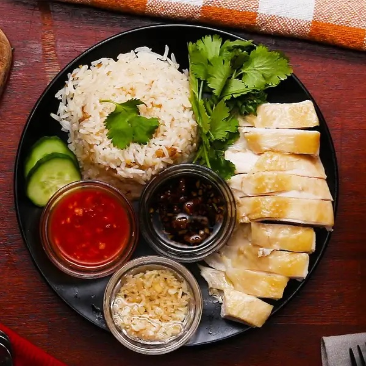

Chicken Rice

Description
Hainanese chicken rice is a dish of poached chicken and seasoned rice, served with chilli sauce and usually with cucumber garnishes. It was created by immigrants from Hainan in southern China and adapted from the Hainanese dish Wenchang chicken.
Ingredients
- Chicken
- Rice
- Chilli Sauce
Steps
- Cook the chicken
- Cook the rice
- Enjoy!